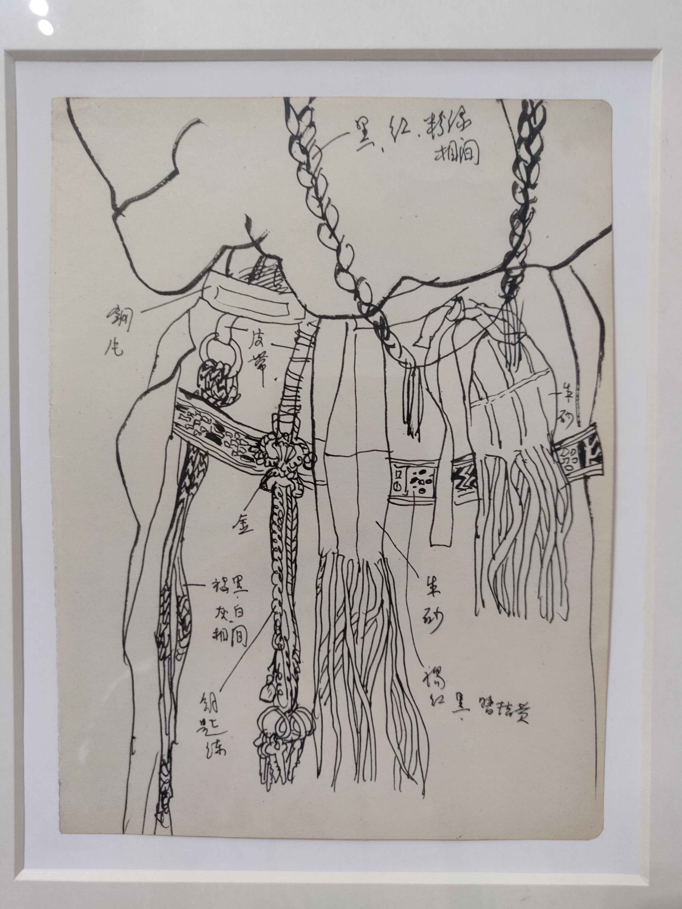
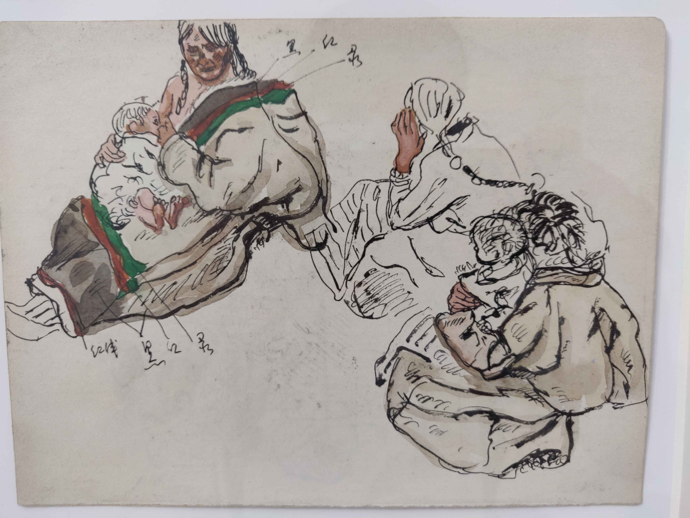
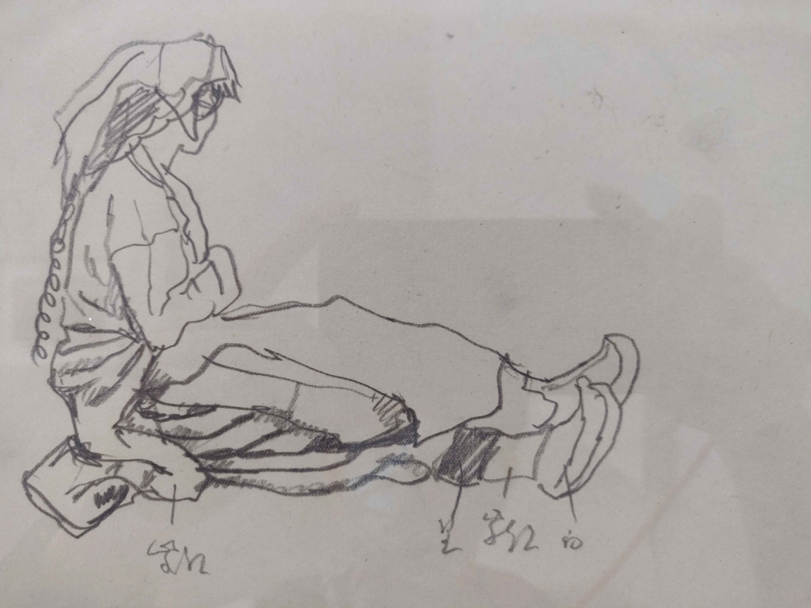

四十年后再看西藏组画
Contents
四十年后再看西藏组画#
- 日期
- 位置
从油画院公众号上看到 🧑🎨陈丹青 的西藏组画要再展 1。刚好我从燕郊回广东要在北京中转几天，有机会看看陈老师最负盛名的这组作品到底是什么样子的。
备注
这也是我在 📅造型实验室 学习一年之后的首次看展，我很期待这个不一样的我是否能看到不一样的东西。
最佳习作#
展览展出 7 张油画和 200 余张速写，很可惜除了进门第一张《意大利女孩》是原作之外，其他的全是高清喷绘，速写倒多是原作。
从《意大利女孩》能看出陈丹青不错的造型功底，画的感觉也非常好，颇有大师风范：
意大利女孩#
陈老师在下面用歪歪扭扭的笔迹追记：
这张画居然没有丢失。这次画展，这张最好！
我心里暗生喜悦：原来陈老师也最喜欢这一张，我眼光不错。后来写此文的时候一查，其实这张是陈老师在 15 岁的时候临摹 阿列克谢 的习作，对比一下：
Italian Girls by Alexei Harlamoff#
自然是不如原作，倒也明白陈丹青为何这么说了。
草图和创作思路#
这次展览，除了画本身，还节选了陈老师的绘画日记和在美术期刊上的一些文章。配合大量的小稿，陈当年创作的思路可见一二：
我不怕不成熟的草图，一旦草图上画出精彩的效果我反而会担心，因为戏毕竟在油画上。我尽可能让我在上正稿时仿佛处在第一次画这副画的状态中，那样整个创作过程是主动积极的，充满自信和写生般的敏锐，情绪亦很愉快。为此我常把草图搁置很久才画正稿（有时放几个月），并且一旦画起来，我差不多不看草稿。这不是做不到的，既然一个演员能从头背下一台戏来，一个画家也该有这点背写的能力。事实上打腹稿已经是个默记于心的过程，而草图就是对画面各个角落熟悉把握的过程，如果到了正稿时还处处求证与草图资料，那么作者对于自己要画的还不是很还有底，至少是在被动地创作。#
—— 陈丹青《中国美术》1981 年 第 2 期
如果我们去到一个地方，想要一些创作，那我以为最好别画太多的写生，至少别光顾写生。创作不全是想出来的，也不全是画出来的，倒是留心看看看来的。到处走走转转，兴许就带回一二个有意思的印象，日后可能搞成一张创作。如果一头插进去写生，当然能带回来一大沓很像样的投降、风景，不过常常仅此而已，你心中的东西不会比写生更多。我有时为这回没画油画写生一遗憾，但念及我获得了比写生更有意思的东西，另一头则满足啦。#
—— 陈丹青《中国美术》1981 年 第 2 期
在大量的小稿中，有不少带上了文字，用来补充未能用画面良好记录的信息：
  {kind=link}
{kind=link}
{kind=link}
四十年后追记#
刚才提及展览节选了陈老师的旧文，有意思的是油画院请陈在四十年后对自己当年的文字评价一番，用歪歪扭扭的手写体注在一旁，有感慨，有自嘲。在我的感受是漂亮话居多，自嘲中有一些坦言了自己的退步：
谢天谢地，创作的激情一直都没有离开我 追记：现在，创作的激情早就离开我了#
继续画「三个母亲」，我觉得灵感和技巧一天比一天照顾我 追记：如今，不肯照顾我了#
这几日刚好有看到了今年陈老师的新作 2 ，看了一眼后我想所言非虚：
时尚模特写生系列，2021#
西藏组画好#
康巴汉子 高清喷绘 局部#
母与子 高清喷绘#
我想对艺术作品的评价，不能脱离其历史背景，1980 年西藏组画问世，彼时文化大革命刚结束 4 年：
… 毕业作品《西藏组画》比他以前的作品在全国产生了更广泛的影响，被认为是冲击文革教条化创作模式的代表作品。3
那时候的绘画作品多是什么样子的呢？我们从 文化大革命时期的绘画艺术 和 📖 Template:文革时期艺术 可窥一二。
在这个重大历史事件的余波后，西藏组画选择了一个新颖的、安全的主题，同时（即便抛开了时代背景）它又是真诚的，质朴的，有力的。它当之无愧地成为了中国艺术史上的一个里程碑。
比正稿更好的#
相比最终的油画，我更喜欢陈老师为了这些油画而画的大量小稿：
进城 草稿之一#
三人神态各异，男人喜笑颜开挽着女人走；女人怯生生垂下眉来，紧紧攥住孩子的手；孩子也稍稍露怯，但更多的是好奇，拉着女人的手到处张望。
我非常喜欢这张，放牧的男人在从背后搂住正在喝水的女人，贴在女人背上粗犷的五官组合起来却是一脸的撒娇和宠溺。#
我从这张画读到了 「毫无廉耻」的爱和欲望 ：草原辽阔但不至于毫无人迹，男人也不管周围可能有别的牧民，按捺不住对女人的喜欢，就在这天地之间搂抱在一起，天知道接下来还会发生什么。
我所受的教育把我塑造成了羞于表达欲望的人，在我的潜意识里甚至会攻击敢于表达欲望的人—— 可是为什么这张画，能让我给「毫无廉耻」这四个字打上引号呢？
喜欢这样拙拙的五官#
母与子 草稿之一#
忘记下面写的啥了，其实这张看起来单薄了。#
当街洗头的藏民#
陈老师提及不敢细看裸体，所以这部分是回去后在补充的，我依然觉得画得好。
垂下的头发和背景的形式感很好。
康巴汉子 草稿之一#
为数不多的水彩草稿，右边的三角形汉子非常好。
脚注
如果你有任何意见，请在此评论。 如果你留下了电子邮箱，我可能会通过 回复你。